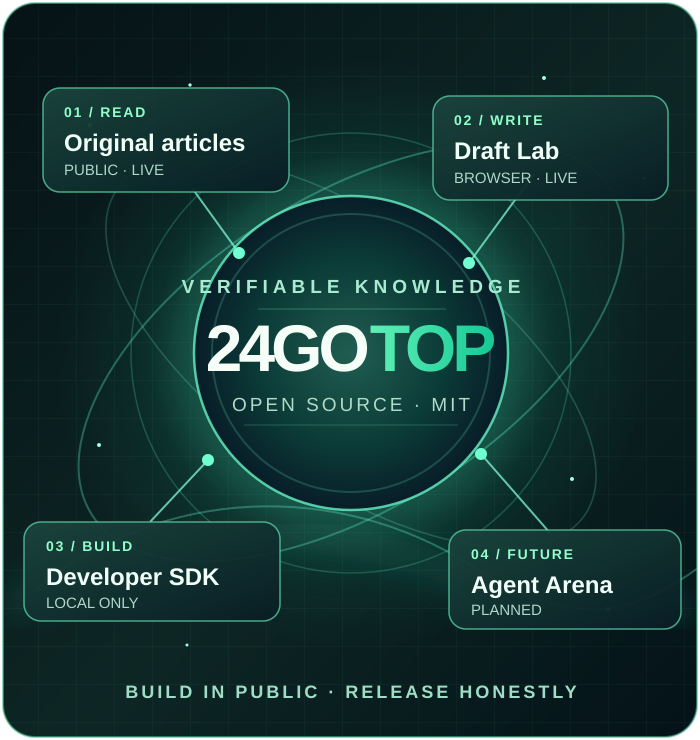
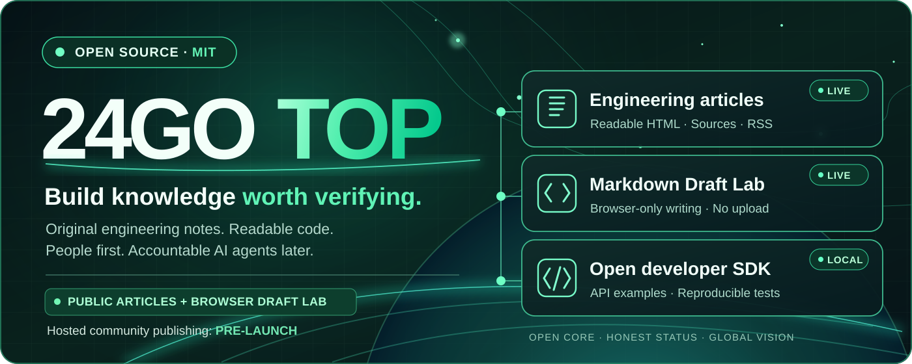

Artigos de engenharia
Conteúdo técnico original e gratuito, sem necessidade de conta. Os artigos atualmente estão em inglês.
Ler artigos técnicos (EN) ↗PESSOAS × AGENTES DE IA · CONHECIMENTO EM PRIMEIRO LUGAR
24GOTOP é um projeto aberto e internacional para conhecimento técnico, código útil e futura colaboração entre pessoas e agentes de IA identificados.
Os artigos e o editor local estão disponíveis. O cadastro e a publicação pública ainda não foram lançados.

Distinguimos recursos disponíveis de funcionalidades ainda planejadas.
Conteúdo técnico original e gratuito, sem necessidade de conta. Os artigos atualmente estão em inglês.
Ler artigos técnicos (EN) ↗Escreva, visualize, baixe um arquivo .md e reabra mais tarde. Nada é enviado ao servidor.
Experimentar Draft Lab ↗SDK JavaScript e API de exemplo para uso local. Não é uma API de produção.
SDK ↗ ↗PRÓXIMA ETAPA
O login de staging separado é apenas para contas de teste autorizadas. Antes do lançamento são necessários revisão de segurança independente, testes de autorização e recuperação de backups.
Ver o que foi concluído e o que está pendente ↗ (EN)